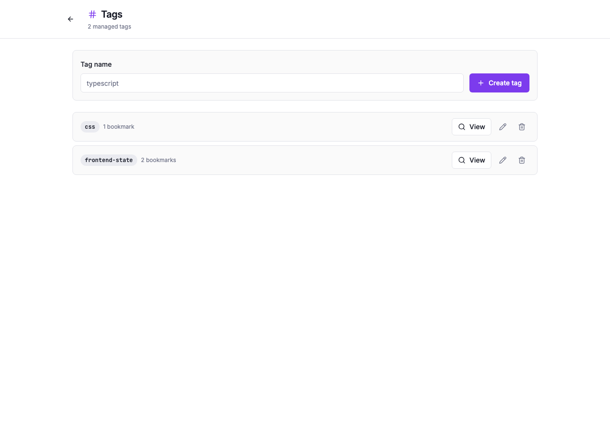
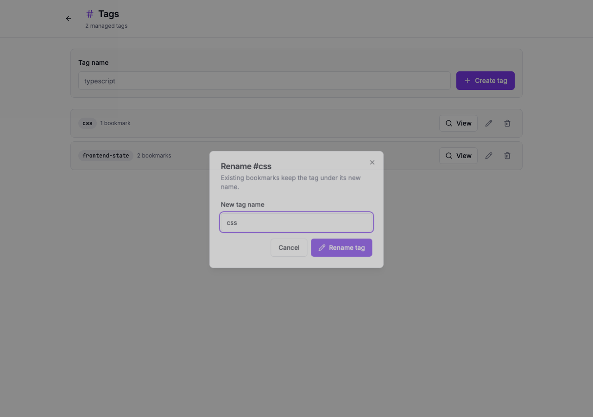
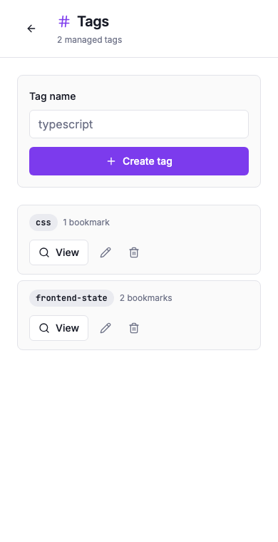

Little Imp Task Report
Tag Rename API And UI

Before
Tags could be created, browsed, deleted, and opened on detail pages, but renaming a tag required manual bookmark edits or deleting and recreating the tag.
Problem
TASK-100 needed an atomic rename path so users can clean up tag names without losing associations, while keeping duplicate-name behavior explicit and documented.
Changes Added
- Added
PUT /tags/:idwith the existing tag validation rules, generated API contract entries, and generated API docs. - Documented conservative duplicate handling: target names that already belong to another tag return
409 Conflictinstead of merging tags implicitly. - Added a repository rename operation that preserves bookmark associations and refreshes FTS tag text for affected bookmarks.
- Added a reusable rename dialog on the tag management and tag detail surfaces.
- Invalidated tag, bookmark-list, archive, trash, and search caches after rename; tag detail renames also navigate to the new tag route.
Result
Stable associations
Bookmarks stay attached to the same tag ID, so a rename changes taxonomy text without rewriting each bookmark relationship.
Visible feedback
The UI keeps validation and daemon errors in the dialog, refreshes list state after success, and updates the detail route to the new tag name.
Verification
bun test src/test/integration/tags.test.tsfromdaemon/npm run test -- src/lib/api.test.ts src/pages/Tags.test.tsx src/pages/TagDetail.test.tsxnpm run docs:apinpm run checkpassed with existing Fast Refresh, Browserslist, and chunk-size warnings only.npm run test:e2e- Browser verification passed against isolated daemon and Vite servers on desktop and narrow viewports; console output showed only existing React Router future-flag warnings.
Additional Screenshots


Implementation Notes
The daemon rename route checks that the source tag exists before parsing the request body. Duplicate target names are rejected up front so the operation never silently merges user taxonomy. Because bookmark/tag join triggers do not fire when the tag row itself changes, the repository refreshes bookmarks_fts.tags for every bookmark associated with the renamed tag.
Files Changed
daemon/src/api/contract.tsdaemon/src/db/tag-repository.tsdaemon/src/routes/tags.tsdaemon/src/test/integration/tags.test.tssrc/components/TagRenameDialog.tsxsrc/lib/api.tssrc/lib/api.test.tssrc/lib/tag-cache.tssrc/lib/tag-names.tssrc/pages/TagDetail.tsxsrc/pages/TagDetail.test.tsxsrc/pages/Tags.tsxsrc/pages/Tags.test.tsxAPI.mddocs/api-contract.jsondocs/task-reports/index.htmldocs/task-reports/2026/index.htmldocs/task-reports/2026/05/index.htmltasks/README.mdtasks/done/TASK-100-tag-rename-api-ui.md